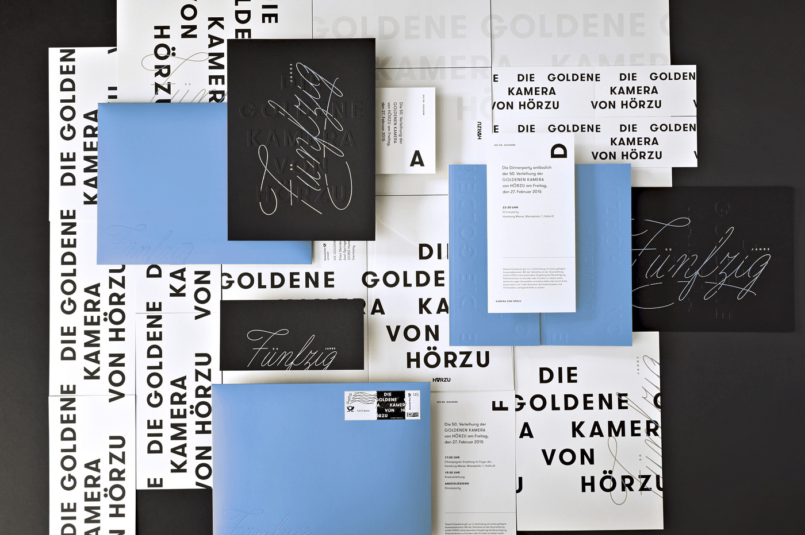

Research a Typeface
GT Walsheim is a geometric sans-serif typeface designed by Noël Leu and released in 2010 through Swiss foundry Grilli Type. This font is used by blog design, and it is display text which is used for logo and header and book cover.
I think it is properly used for logo because its bold style has visual weight. When it become a logo or header, it is easy to be recognized even though people stand far away from this logo.
The only thing that I dislike is that many people use this font for logo and header, but it is less likely to be used for body text because I think the body text should be more natural. But GT Walsheim give me a serious feeling. This can be a cause why people don’t use it as body text.
The personality of this typeface is serious because this sans-serif typeface has a construction look. Therefore, I think it is also can be used for post of building. Another personality is varietal. As mentioned, its bold font give audience a strong visual weight, but when people use it for different style or family of GT Walsheim, it gives me a totally different feeling.
By Nick Carson, https://www.creativebloq.com/typography/free-web-fonts-1131610